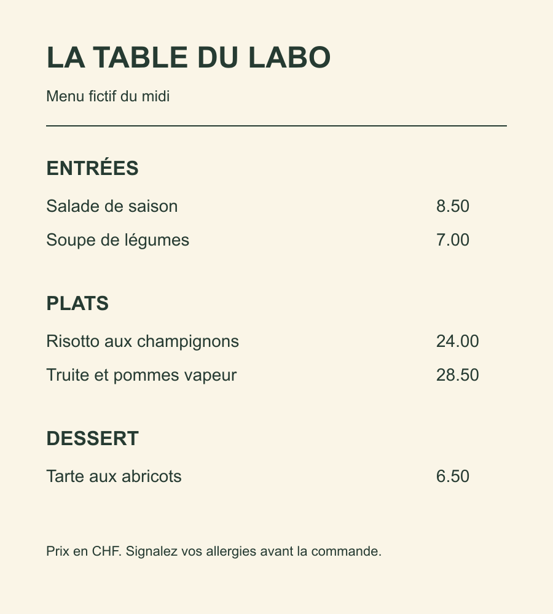

Un programme classique
Un humain écrit les règles : « si le message contient le mot gagnant, c’est un spam ». Le programme applique ces règles explicites.
Lire un scan, reconnaître une image, transcrire une voix, parler : des IA font tout cela depuis des années. Le LLM n’est qu’une famille parmi d’autres.
Clément Bastien
Vision · voix · images · musique · vidéo · LLM
Mis à jour le 10 novembre 2026. Certaines informations peuvent être datées : tout va vite. La curiosité est votre meilleur allié, suivez les sources et vérifiez.
Combien d’IA avez-vous utilisées aujourd’hui, avant même d’ouvrir ChatGPT ?
Un humain écrit les règles : « si le message contient le mot gagnant, c’est un spam ». Le programme applique ces règles explicites.
On lui montre des milliers de messages déjà triés, spam ou non. Elle trouve elle-même les indices qui les distinguent, et les applique aux nouveaux.
C’est l’apprentissage automatique. D’autres IA utilisent des règles écrites, ou combinent les deux approches.
1950
Alan Turing
Il remplace la question « Les machines peuvent-elles penser ? » par un jeu d’imitation.source
1976
Ray Kurzweil
Sa machine à lire reconnaît le texte imprimé (OCR) et le lit à voix haute pour les personnes aveugles.source
1997
IBM Deep Blue
L’ordinateur bat le champion du monde d’échecs, Garry Kasparov.source
2002
Filtres anti-spam
Les messageries apprennent à trier le spam à partir des messages déjà classés.source
2011
Siri
Un assistant vocal arrive dans un téléphone grand public.source
2012
AlexNet
Un réseau de neurones écrase la concurrence en reconnaissance d’images : la vision par ordinateur décolle.source
2016
Google Traduction
La traduction passe aux réseaux de neurones. DeepL suit en 2017.sourcesource
2022
ChatGPT
Le LLM devient grand public. Il arrive après tout le reste, et s’appuie dessus.source
Une IA spécialisée est conçue pour une tâche précise. Repérez ce qu’elle reçoit et ce qu’elle produit : les deux peuvent être du texte.
Pour choisir une IA, commencez par vous demander : qu’est-ce que j’ai, et qu’est-ce que je veux obtenir ?
| Famille | Entrée → sortie | Des exemples |
|---|---|---|
| OCR (reconnaissance optique de caractères) | image d’un texte → texte | Tesseract, le scanner du téléphone |
| Vision | image → objets, visages, contours | le tri des photos, la voiture qui repère un piéton |
| Description d’image (captioning) | image → phrase qui la décrit | le texte alternatif proposé automatiquement |
| Transcription (STT) | voix → texte (speech-to-text) | Whisper, Vosk, la dictée du téléphone |
| Synthèse vocale (TTS) | texte → voix (text-to-speech) | les lecteurs d’écran, Piper |
| Traduction | texte → texte dans une autre langue | DeepL, Google Traduction |
| Génération d’images | texte → image | Stable Diffusion, Midjourney |
| LLM | texte → texte | GPT, Claude, Mistral, Llama |
L’OCR (reconnaissance optique de caractères) transforme le texte visible d’un document en texte exploitable. Il peut utiliser le contexte, sans vérifier la véracité du document.

Une image → du texte
Peut-on chercher un prix sans le recopier ?
LA TABLE DU LABO Menu fictif du midi ENTRÉES Salade de saison 8.50 Soupe de légumes 7.00 PLATS Risotto aux champignons 24.00 Truite et pommes vapeur 28.50 DESSERT Tarte aux abricots 6.50 Prix en CHF. Signalez vos allergies avant la commande.
Résultat réel de l’Atelier des IA. Vérifiez que les prix sont associés aux bons plats.
Sur une photocopie, « Le Locle » peut devenir « Le Lodje ». Un nom faux change le dossier.
Une étiquette pour toute l’image : « une plage ». C’est ce qui range les photos de votre téléphone.
Chaque objet, avec un cadre autour : « deux personnes, un vélo ». Ce que fait une voiture qui freine pour un piéton.
Le contour exact, pixel par pixel. Utilisé en imagerie médicale, ou pour flouter l’arrière-plan d’une visio.
Reconnaître un visage est aussi de la vision. En Suisse, les données biométriques qui identifient une personne de manière unique sont des données sensibles (art. 5 nLPD).
Il recopie ce qui est écrit sur l’image : « Soldes −30 % ». Il ne dit rien du reste.
Elle dit ce que l’on voit : « une vitrine de magasin avec une affiche de soldes ». C’est un modèle qui relie vision et langage.
Utile pour proposer un texte alternatif aux personnes aveugles. À relire : la description peut inventer un détail.
La transcription (STT, pour speech-to-text) découpe le son et le change en mots écrits. C’est la dictée de votre téléphone, ou les sous-titres automatiques.
Une voix → du texte
Une voix synthétique prononce une phrase de bienvenue.
« Bonjour, bienvenue dans l’atelier des intelligences artificielles. »
Transcription corrigée après écoute.
« Former opposition » peut aussi devenir « former aux positions ».
Plusieurs techniques : synthèse par règles ou assemblage de sons enregistrés, avec une qualité variable.
Des modèles neuronaux génèrent une voix et son intonation. Le naturel varie selon le modèle, la langue et le texte.
« Bonjour ! Bienvenue dans l’atelier des intelligences artificielles. »
Voix générée localement par Piper dans l’Atelier des IA.
DeepL, Google Traduction : du texte vers du texte, dans une autre langue.
« The cat is sleeping on the chair. »
→ Le chat dort sur la chaise.
Résultat d’Opus MT dans l’Atelier des IA.
La série suivante, la chanson suivante, le produit « souvent acheté avec ».
Une fraude à la carte bancaire, un spam, une pièce défectueuse sur une chaîne.
La météo, le trafic, la demande d’électricité de demain.
Elles décident chaque jour de ce que vous voyez, sans rien écrire.
À VOUS DE JOUER · TEXTE → IMAGE
Choisissez, puis observez ce que chaque détail apporte.
La consigne influence le sujet, le cadrage et l’ambiance.
Décrire un style, proposer des paroles, puis obtenir un morceau : les IA musicales produisent de l’audio à partir d’une consigne.
Suno compose un morceau à partir d’un style musical. On peut fournir ses paroles ou choisir un instrumental. Avec MusicGen, on peut aussi guider la musique par une mélodie.
Lire une phrase avec Piper, c’est de la synthèse vocale. Composer un morceau, c’est une autre tâche.
Exemple musical · lecture directe
Écoutez un extrait : que remarquez-vous dans la voix, les répétitions et la structure du morceau ?
Outil de production du morceau : non confirmé.
Source : YouTube ↗ (nouvel onglet)Une image fixe devient une séquence animée. Ici, Veo a généré une vidéo à partir de l’image du rouge-gorge.
Veo, de Google DeepMind, génère une séquence à partir de texte ou d’une image et peut produire le son associé. Décrivez le sujet, son action et le mouvement de caméra.
Image → vidéo · Veo · environ 10 secondes
Un rouge-gorge sur une branche humide, au soleil. Comparez l’image fixe et le mouvement généré.
Exemple fourni par le formateur, réalisé avec Veo via un accès gratuit.
Voir l’image de départ ↗ (nouvel onglet)Un LLM (grand modèle de langage) apprend notamment à prédire les jetons suivants d’un texte. Cet entraînement lui donne des capacités de rédaction, de traduction et de programmation.
Le chat dort sur le …
Chiffres inventés pour l’exemple.
Un Transformer est une façon de construire un modèle d’IA. Son mécanisme d’attention met les morceaux du texte en relation et donne plus de poids à certains liens.
« Léa pose son sac. Elle le reprend. »
Elle → Léa. Le → son sac. Les mots précédents aident à interpréter la suite.
Une illustration du rôle du contexte, pas le calcul réel d’un modèle. Dans GPT, le « T » signifie Transformer.
2017
Transformer
Publication de l’architecture.
2018
GPT-1
Un premier modèle de recherche.
2020
GPT-3
Un modèle de langage plus grand.
2022
ChatGPT
Une interface pour discuter.
Un texte plausible n’est pas forcément vrai. Une réponse inventée ou sans fondement peut être une hallucination, même formulée avec prudence.
Les assistants récents acceptent une photo ou la voix. Pour ça, d’autres IA travaillent à côté du LLM, ou une partie de vision et d’audio est greffée sur lui.
ce que vous envoyez
vision, transcription : ils traduisent en données que le modèle sait lire
le LLM raisonne sur ce qu’on lui transmet
« Cerveau et sens » est une image pédagogique. Certains modèles multimodaux traitent directement images et sons ; notre montage sépare ces outils.
| Une IA spécialisée (OCR, transcription…) | Un LLM | |
|---|---|---|
| Ce qu’elle fait | Une seule tâche | Presque tout ce qui passe par du texte |
| Où elle tourne | Souvent sur votre ordinateur, sans internet | Le plus souvent chez un fournisseur, en ligne |
| Vos données | Traitement local possible ; vérifier les envois de l’application | Selon le modèle, son hébergement et les outils branchés |
| Coût | Selon la licence, la machine et le service | Selon la licence, la machine et le service |
| Erreurs | Omissions, confusions, texte inventé : selon l’outil | Fiabilité à mesurer sur la tâche, sans classement universel |
Le bon réflexe : une IA spécialisée pour la tâche précise, un LLM pour rédiger et raisonner.
Une plateforme où des équipes partagent des modèles, des jeux de données et des démonstrations. Chaque démo peut avoir son interface et ses limites.
Les modèles entraînés : les moteurs capables de lire, voir, parler ou créer.
Des jeux de données pour entraîner, évaluer ou explorer les modèles.
Des applications de démonstration pour essayer un modèle dans une interface.
Pour l’exercice, ouvrez les Spaces sélectionnés dans la fiche.
Ouvrez l’onglet App. Chargez l’exemple fourni ou saisissez la consigne indiquée.
Le bouton peut s’appeler Run, Submit ou Generate. Attendez la fin du calcul.
Comparez le résultat à votre attente, puis changez un seul élément.
« Running » signifie que l’application est démarrée. Un calcul peut encore échouer : navigateur incompatible, attente ou quota épuisé.
Si un paiement est demandé, choisissez une autre mission. Utilisez des données fictives ou les fichiers d’exemple.
Ouvrir la fiche d’exercice ↗ (nouvel onglet)Sept missions au choix : reconnaître, décrire, lire, localiser, transcrire, faire parler et créer une image.
Avant : formulez le résultat attendu.
Faites deux essais en changeant un seul élément.
Notez un usage utile, une limite et ce qu’il faut vérifier.
30 à 45 minutes · Téléchargez vos observations avant de quitter la fiche.
L’IA existait bien avant ChatGPT.
Chaque IA a une entrée et une sortie.
Des outils spécialisés et un LLM peuvent se compléter.